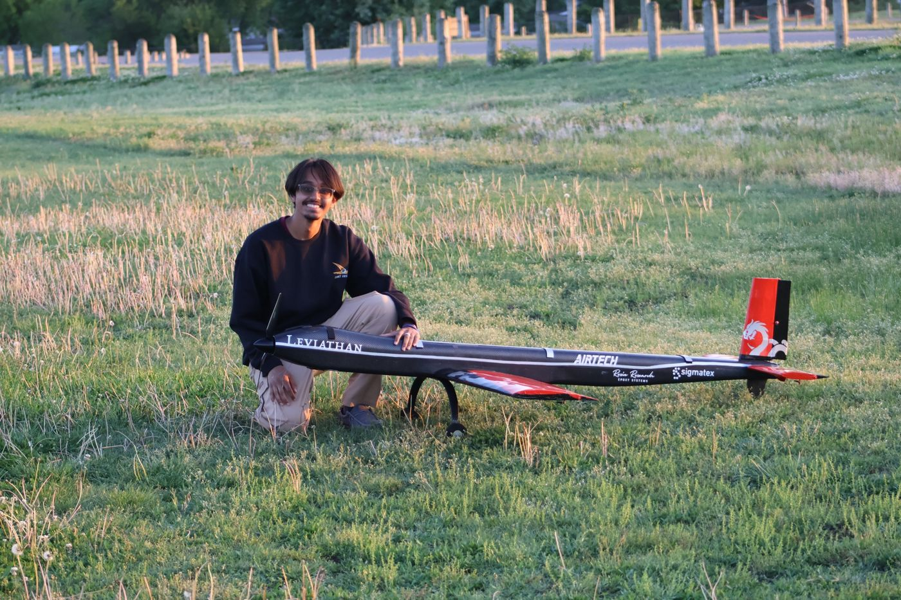
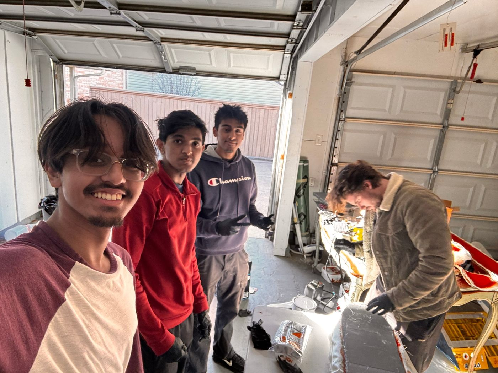
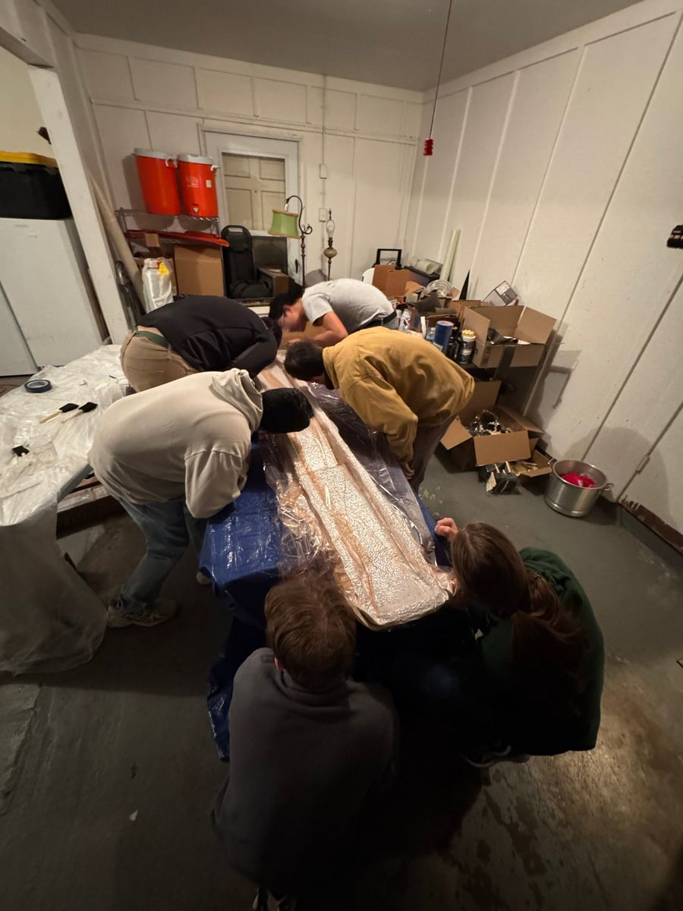
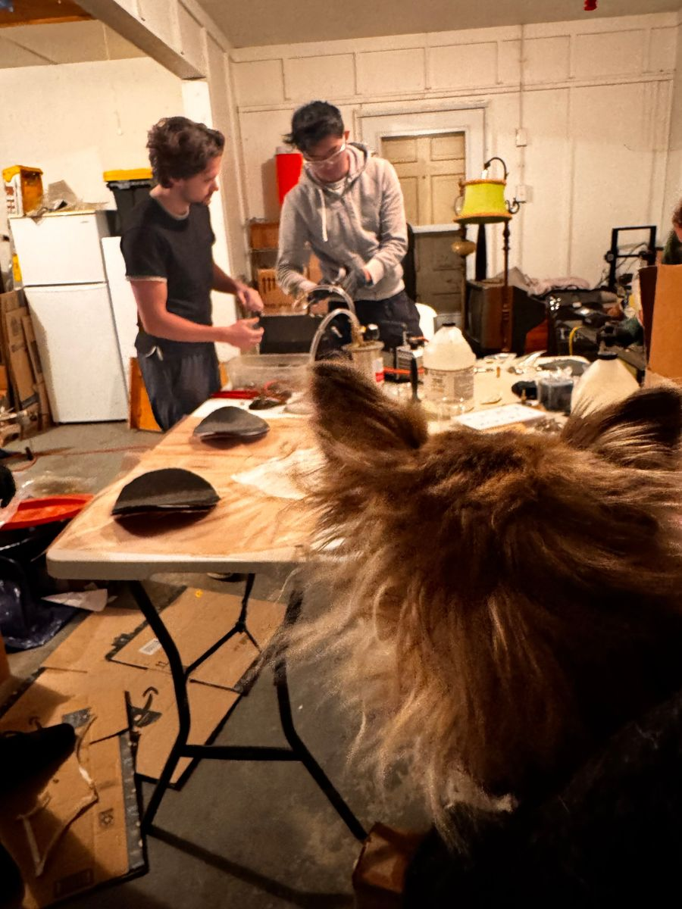
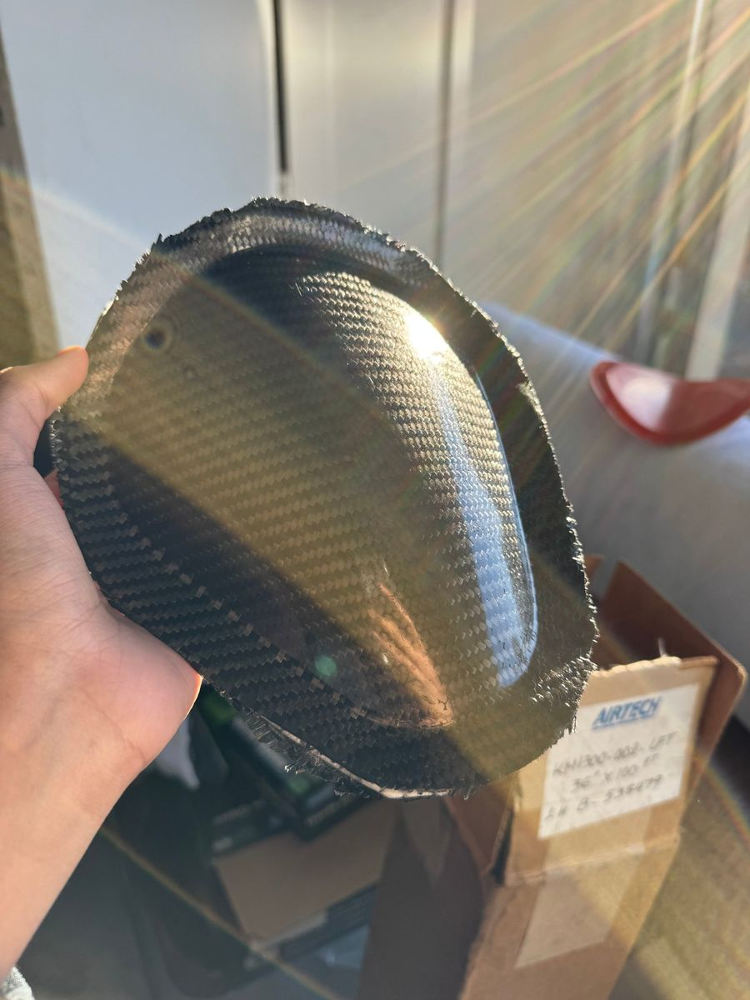
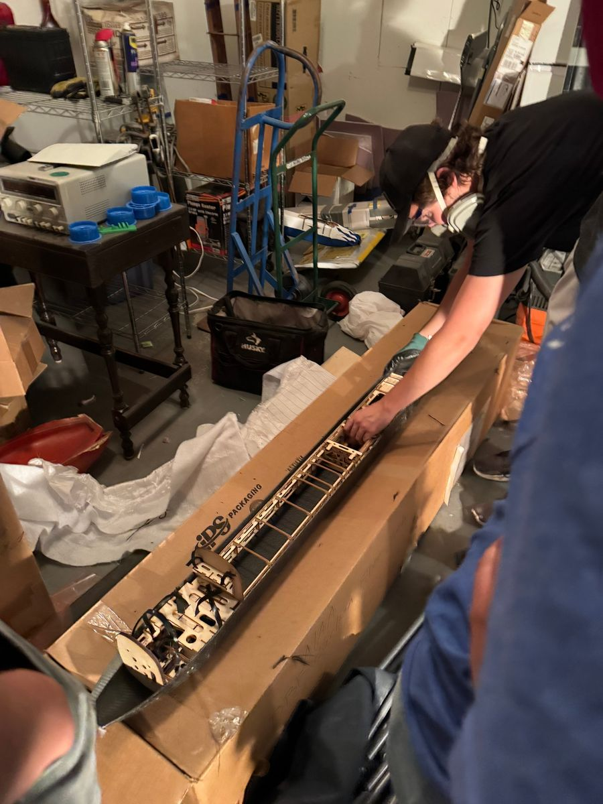
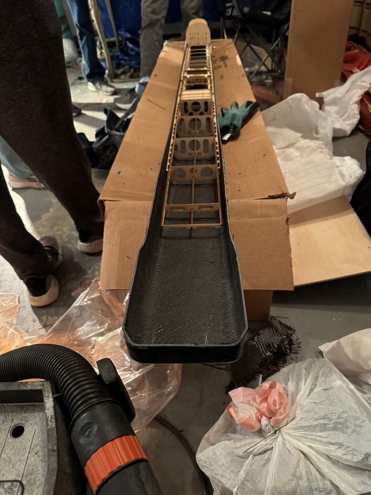
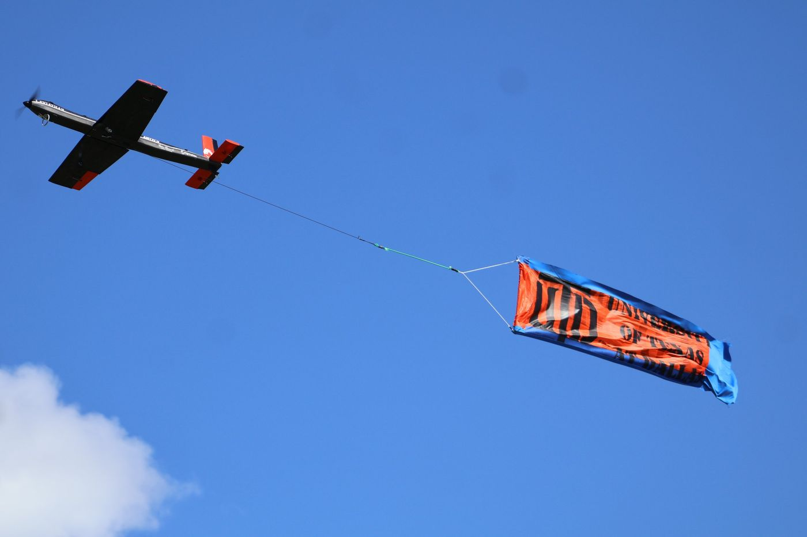
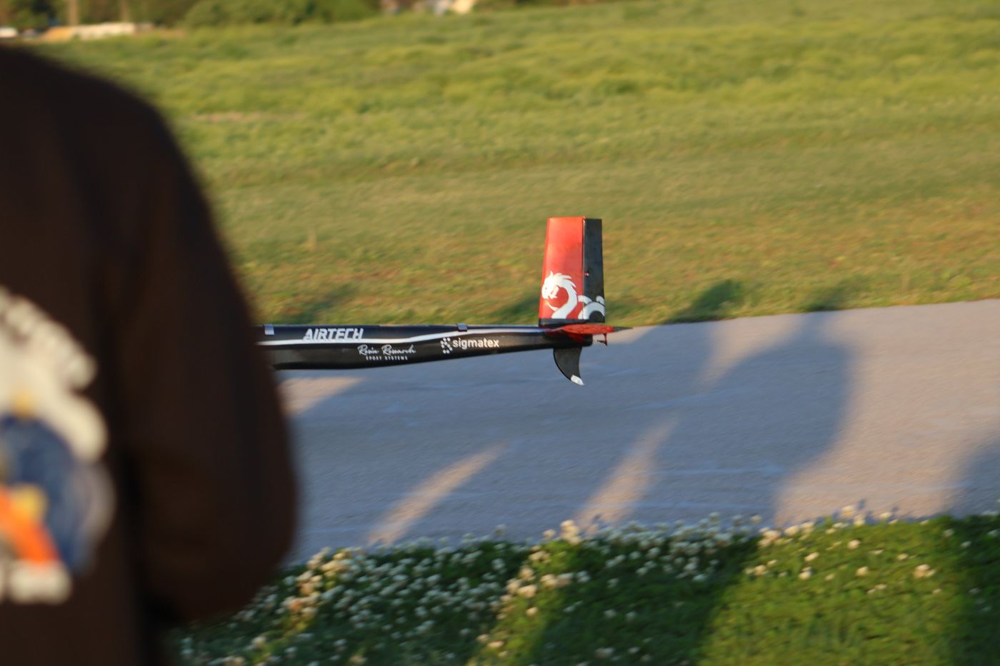
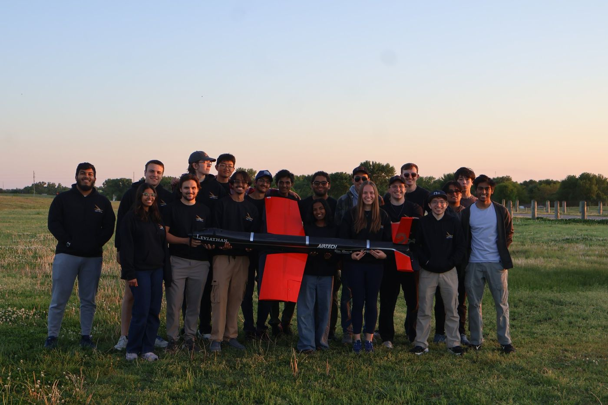

Building Leviathan
I joined Comet Aviation, UT Dallas's AIAA Design/Build/Fly team, through the ADC program, the onboarding pipeline into DBF. When my two ADC teammates split off to aerodynamics and electrical, I went into the remaining technical branch – mechanics – and joined the fuselage group because I wanted to do hands-on manufacturing and work with composites.
The 2025–26 competition challenged teams to build a banner-towing bush plane. Across three flight missions, the plane had to fly timed laps, carry passengers (rubber ducks) and cargo (hockey pucks), and tow a banner, plus a ground mission to load passengers and convert the plane into its banner-towing configuration. To compete in this competition, we built Leviathan, the aircraft seen below.

I helped build the fuselage, and I helped redesign our molds as we learned from each attempt. Our first mold design had a lot of ridges and sharp corners from the hatch design at the time, which made laying up and pulling parts out of the mold miserable. My lead and I, two of the main people working on that first version, reworked it to be much smoother.
That first process had three stages: low-infill 3D-printed positive molds, fiberglass molds laid up over those positives with polyester resin, and finally carbon fiber laid up inside the fiberglass molds.

That process produced Leviathan 1, but there was one pretty glaring issue: the tail section came out tilted about 15° from vertical relative to the front of the plane, which gave it unpredictable flight and downwash characteristics. We think it came from a combination of the mold halves misaligning, the printed positives warping, and the part shifting during cure. Due to this defect, Leviathan 1 was retired.
We needed a better mold process, so I suggested we 3D print molds at high infill, coat them in epoxy to get a smooth surface, and then lay up and vacuum-bag the carbon fiber directly onto them. Cutting out the fiberglass stage removed a whole step where things could go wrong. Getting the vacuum bagging to cooperate took some persistence.


Fig. 3 · “Vacuum whisperers” hunting for a leak for the fourth time, and Chupa, our lead’s dog, supervising
When we finally got the vacuum to hold, the new process gave us our first successful part.

With the molds solved, what remained was refining our layup process. On most days the build crew was a revolving door of about five people, with my lead, my director, and me always there. Besides being one of the three main people laying up, I was also one of the three main people laser cutting and 3D printing parts, including the laser-cut basswood structure that sits inside the carbon shell.


Fig. 5 · Fitting the laser-cut basswood interior structure
The problem I took on myself was weight. While researching our process, I realized that our real-world weights didn't even come close to our theoretical ones. After a few days of watching how we worked, I determined that we were using far more resin than we needed. By changing out our scale and being less wasteful when wetting out the cloth, we cut the fuselage's weight by 7%.
Leviathan 2 was the plane we took to Wichita, Kansas, in April 2026 for the 30th DBF competition.

We were projected to place higher, but a slight mishap while preparing for Mission 3 left our banner release mechanism inoperable, and we failed that mission completely. Even so, we finished 23rd out of 89 teams. Leviathan 2 is still intact today, though the team won't be flying it again.

The competition was absolutely one of the most enjoyable experiences of my life. Spending time with the seniors on the team and meeting so many people who love aviation as much as we do is something so unique to collegiate engineering competitions and DBF that you can't really get that experience anywhere else.
What I took away is that I love working with my hands, and I love working with people who share my goals. I love spending late nights working on projects, and I wouldn't trade that experience for anything. I hope to see much more of it in my future.
